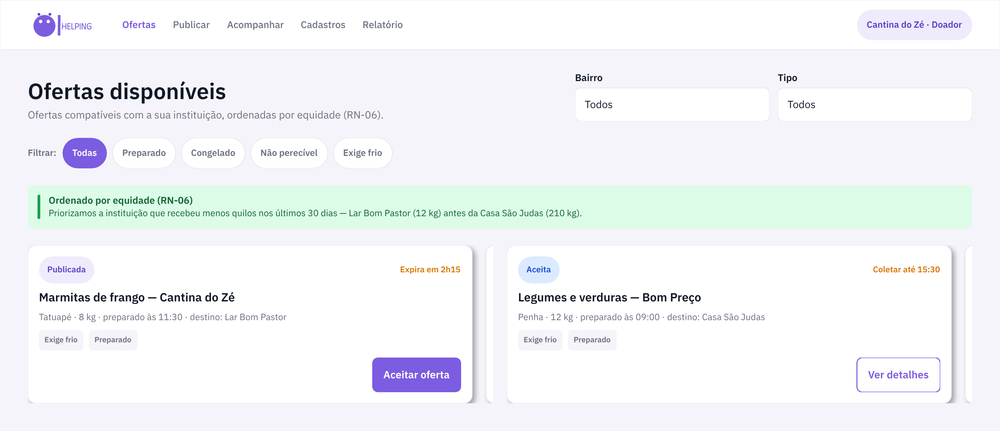
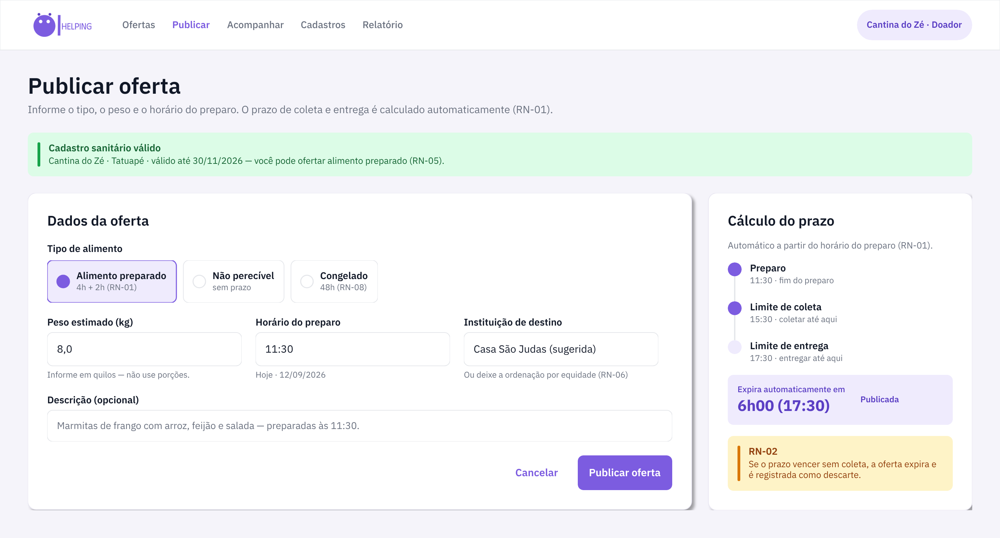
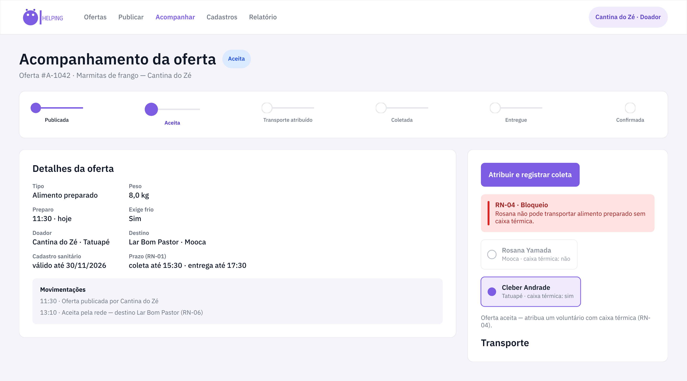
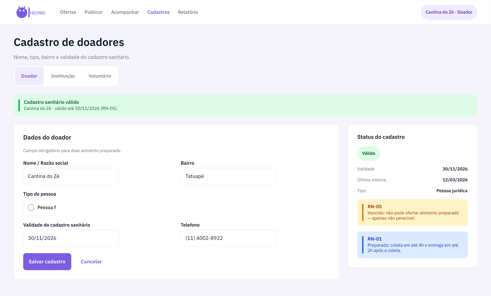
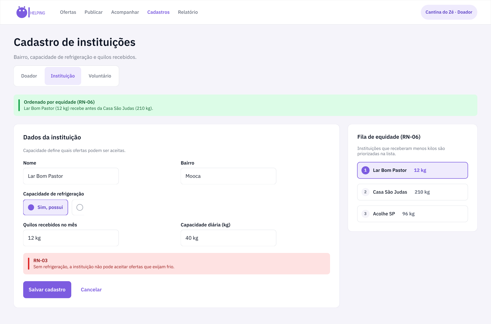
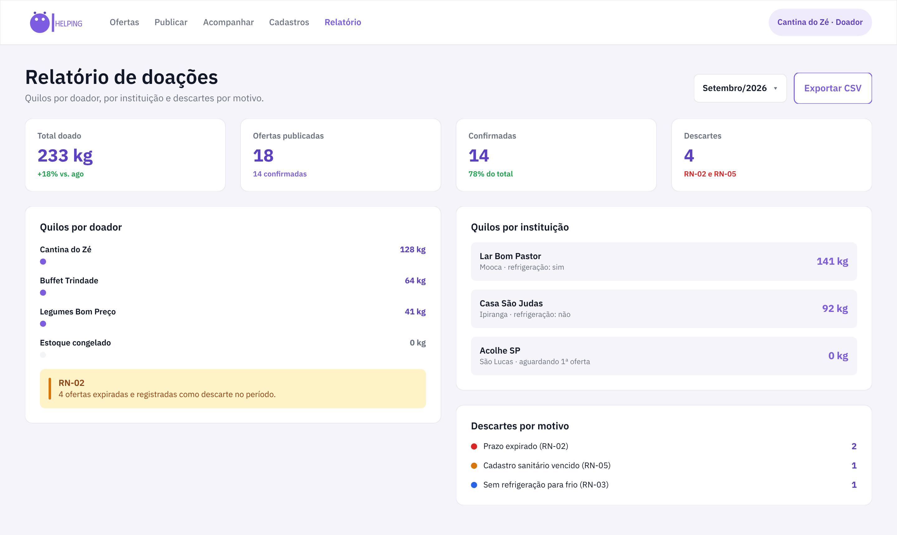

Publicada
O doador informa alimento, quantidade, prazo e local de coleta.
Todo dia comida boa vai para o lixo — enquanto muita gente passa fome. O Sobra Zero conecta restaurantes, cantinas e mercados com excedente a instituições sociais e voluntários de transporte, com rastro, prazo e responsabilidade do prato à mesa.

Cada oferta nasce com validade, passa por aceite e transporte e só termina quando a instituição confirma o recebimento.
O doador informa alimento, quantidade, prazo e local de coleta.
A instituição aceita a oferta dentro do prazo de validade.
Um voluntário com caixa térmica é atribuído à coleta.
O alimento sai do doador dentro da janela de 4 horas.
O voluntário leva até a instituição e registra a entrega.
Só a instituição confirma — nunca apenas o voluntário.
RN-02: oferta que ultrapassa o prazo expira sozinha e vira descarte registrado — nada de alimento órfão no feed.
Cadastro em minutos, com as regras de segurança embutidas no formulário.
Restaurantes, cantinas, mercados e buffets com excedente de produção.
ONGs, projetos sociais, cozinhas comunitárias e casas de acolhimento.
Pessoas com tempo e deslocamento para buscar e entregar com cuidado.
Design system no Penpot e exportado para SVG + PNG nesta mesma pasta
(design/) — 9 telas desktop e 7 mobile + menu lateral.





Negócio não é enfeite: prazo, frio e assinatura de quem recebe são requisitos do produto.
RN-01Alimento preparado: 4h entre o fim do preparo e a coleta, 2h entre coleta e entrega.
RN-02Oferta que estoura o prazo expira sozinha e é registrada como descarte.
RN-03Instituição sem refrigeração não pode aceitar oferta que exija frio.
RN-04Voluntário sem caixa térmica não pode transportar alimento.
RN-05Cadastro sanitário vencido: não ofertar preparado, apenas não perecível.
RN-06Feed prioriza a instituição que recebeu menos quilos nos últimos 30 dias.
RN-07Entrega só conclui com confirmação da instituição, nunca só do voluntário.
RN-08Congelado não é preparado: prazo estendido de 48 horas.
Crie sua conta como doador, instituição ou voluntário e publique a primeira oferta em menos de dois minutos.